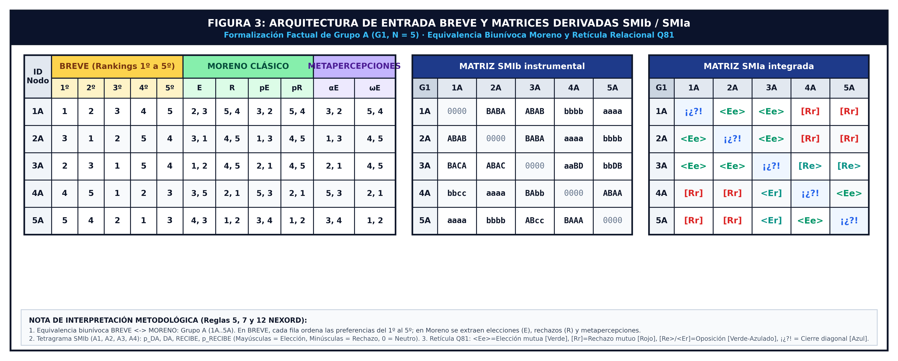
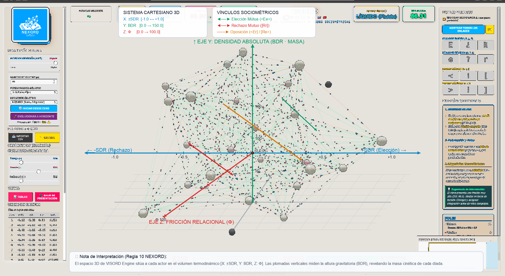
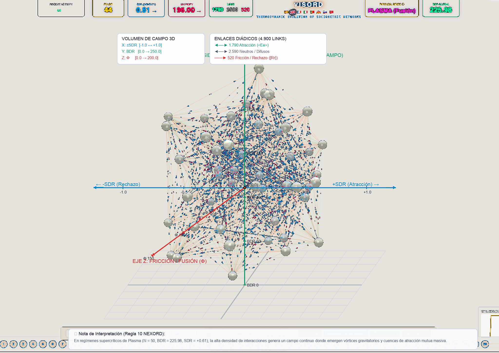

SOCIOMETRÍA ORDINAL COMPUTACIONAL Y DIAGNÓSTICO SOCIO-TERMODINÁMICO (PLATAFORMA NEXORD)
Manifiesto Científico, Fundamentación Teórico-Metodológica y Propuesta de Gobernanza en Ciencia Abierta
«Hacia una Física de lo Grupal_JMC»
Edición Canónica Homologada v8.0 (2026)
Autor: Dr. José Manuel Cornejo Álvarez
Filiación Académica: Psicología Social. Facultat de Psicologia, Universitat de Barcelona (UB)
Rol en la Iniciativa: Creador de la Plataforma NEXORD y Promotor Científico de la iniciativa del Banco Sociométrico (BSOC)
Concept DOI (Zenodo / CERN): 10.5281/zenodo.18926396
DOI de Edición Homologada: 10.5281/zenodo.18941691
Repositorio Oficial y Documentación: https://josemancor.github.io/soc-ord-web/
Ecosistema Maestro: VISORD 3D/4D (Visualizador Sociométrico Ordinal)
Idiomas Soportados por la Plataforma NEXORD: Español (ES), English (EN), Français (FR), Deutsch (DE), Italiano (IT), Português (PT), Русский (RU), 中文 (ZH).
Resumen
La investigación sobre las redes y colectivos humanos ha estado condicionada históricamente por dos limitaciones metodológicas: el recurso a recuentos binarios planos (elección/rechazo) y los modelos disposicionales desvinculados de la dinámica interactiva de campo. La Plataforma NEXORD formaliza una aproximación continua y procesual a la dinámica de los grupos humanos. Este Manifiesto establece: (1) la articulación contemporánea de las contribuciones de Jacob L. Moreno y Kurt Lewin mediante la cuantificación del orden jerárquico por la función inversa al rango; (2) el axioma fundamental de DAR y RECIBIR como circuito inmanente e indisociable; (3) la administración en formato BREVE mediante arrastre forzado (drag-and-drop) sin empates, formalizada en la dualidad de matrices complementarias A(i, orden) y B(i, j), junto con la clausura diagonal reflexiva (sensores IDA, ITA, ICE); (4) la articulación de la retícula tensorial Q81 (9 × 9) estructurada en el Pentagrama de 10 densidades canónicas, polarizado en las macro-dimensiones DA (emisión) y RECIBE (recepción); (5) la psicologización de los regímenes dinámicos del campo, situando la fricción relacional (Φ) como condición necesaria para la viabilidad adaptativa frente al riesgo de pensamiento grupal (Groupthink), y orientando la intervención hacia el desatascamiento (unjamming) o la reubicación ecosistémica digna; (6) la versatilidad del espacio de diseño multidimensional GxTyCz, sin limitaciones a priori en los modelos de análisis; (7) soluciones gráficas continuas y la medición geodésica invariante en variedades de Grassmann Gr(k, N); (8) la extensión experimental hacia la monitorización de interacciones presenciales en laboratorio físico y el estudio de dilemas sociales; (9) el diagnóstico multimodal apoyado en el modelo del iceberg (haciendo visible y audible la interacción superficial y profunda mediante soluciones gráficas y sonificación hidrodinámica); (10) el uso de la Sociometría CULTURAL como entorno de contraste con reactividad cero; y (11) un marco riguroso de gobernanza institucional regido por la Ética por Diseño, la Ciencia Abierta (FAIR Data), el sellado criptográfico SHA3-512 (Protocolo Clélie) y la custodia académica bajo la figura del Investigador Principal (IP).
Palabras clave: Sociometría Ordinal Computacional, Plataforma NEXORD, VISORD, Banco Sociométrico (BSOC), Formato BREVE, Dualidad Matricial, Clausura Diagonal Reflexiva, Densidades Relacionales, Regímenes del Campo Grupal, Fricción Relacional, Pensamiento Grupal (Groupthink), Retícula Q81, Variedad de Grassmann, Espacio Multidimensional GxTyCz, Laboratorio Físico Presencial, Soluciones Gráficas, Sonificación Hidrodinámica, Modelo del Iceberg, Sociometría CULTURAL, Protocolo Clélie, Ética por Diseño, Ciencia Abierta.
Executive Abstract
Scientific inquiry into human social networks has historically been constrained by two methodological limits: reliance on discrete binary tallies (choice/rejection) and dispositional models detached from interactive field dynamics. The NEXORD Platform formalizes a continuous, processual approach to group dynamics. This Manifesto establishes: (1) the contemporary realization of Jacob L. Moreno's and Kurt Lewin's foundational contributions through hierarchical rank quantification using the inverse rank function; (2) the fundamental axiom of GIVING and RECEIVING as an immanent and indissociable transactional loop; (3) continuous administration via the BREVE forced-drag format without ties, operationalized through the complementary matrix duality A(i, rank) and B(i, j), coupled with reflexive diagonal closure (IDA, ITA, ICE sensors); (4) the articulation of the Q81 tensorial lattice (9 × 9) structured within the 10 canonical densities pentagram, polarized across the macro-dimensions DA (emission) and RECIBE (reception); (5) the psychologization of relational field regimes, framing relational friction (Φ) as a necessary condition for adaptive viability against Groupthink risks, guiding intervention toward non-punitive unjamming or dignified ecosystemic relocation; (6) the versatility of the GxTyCz multidimensional design space, free from a priori constraints on analytical models; (7) continuous graphical solutions and scale-invariant geodesic metrics on Grassmann manifolds Gr(k, N); (8) experimental extension to the monitoring of face-to-face interactions in physical laboratory settings and social dilemma dynamics; (9) multimodal diagnostics grounded in the iceberg model (rendering visible and audible surface and deep interactions via graphical solutions and hydrodynamic sonification); (10) CULTURAL Sociometry as a zero-reactivity benchmark; and (11) a governance framework governed by Ethics by Design, Open Science (FAIR Data), SHA3-512 cryptographic sealing (Clélie Protocol), and academic custodianship under an accredited Principal Investigator (PI).
Keywords: Computational Ordinal Sociometry, NEXORD Platform, VISORD Ecosystem, Sociometric Data Bank (BSOC), BREVE Format, Matrix Duality, Reflexive Diagonal Closure, Relational Densities, Group Field Regimes, Relational Friction, Groupthink, Q81 Lattice, Grassmann Manifolds, GxTyCz Design Space, Physical Laboratory Monitoring, Graphical Solutions, Hydrodynamic Sonification, Iceberg Model, CULTURAL Sociometry, Clélie Protocol, Ethics by Design, Open Science.
1. Fundamentación Epistemológica / Epistemological Foundations
1.1. Superación del Límite Clásico y la Ontología del Vínculo / Overcoming the Classical Limit & the Ontology of the Relational Tie
- [ES] El propósito de NEXORD es actualizar metodológicamente la tradición de la psicología social: trasladar al plano computacional las intuiciones que ni Jacob L. Moreno ni Kurt Lewin pudieron implementar con el instrumental técnico de su época. Moreno formalizó el concepto de átomo social, pero el cálculo manual limitó la sociometría a cuotas binarias fijas (típicamente tres elecciones y tres rechazos). Lewin conceptualizó la teoría del campo psicológico y la topología social, pero careció de operadores matemáticos continuos para cuantificar distancias relacionales sin distorsionar la naturaleza psicológica del vínculo. NEXORD sitúa la interacción relacional activa en el núcleo ontológico de la vida grupal: el grupo no es un agregado estático de individuos, sino un campo dinámico de fuerzas en continua configuración.
- [EN] NEXORD's objective is the methodological updating of social psychology traditions: translating into computational formalisms the foundational insights that neither Jacob L. Moreno nor Kurt Lewin could operationalize with the technical tools of their era. Moreno introduced the concept of the social atom, but manual computation restricted sociometry to fixed binary quotas (typically three choices and three rejections). Lewin formulated psychological field theory and social topology, but lacked continuous mathematical operators to quantify relational distances without distorting the psychological nature of interpersonal ties. NEXORD places active relational interaction at the ontological core of group reality: the collective is not an aggregate of isolated nodes, but a dynamic field of forces in continuous emergence.
1.2. Cuantificación del Orden mediante la Función Inversa al Rango / Inverse Rank Quantification
- [ES] El mecanismo que posibilita el paso a una métrica continua es la cuantificación rigurosa del orden jerárquico mediante la función inversa al rango:

donde r_ij en {1, 2, ..., N} representa el rango ordinal estricto que el emisor i asigna al receptor j, y gamma > 0 modula la tasa de apertura y decaimiento relacional del campo. Esta formulación traduce la ordenación cualitativa en magnitudes relacionales continuas, permitiendo tratar el vínculo diádico como una fuerza medible y proyectable en espacios multidimensionales.
- [EN] The mathematical foundation enabling the transition to continuous metrics is the quantification of hierarchical order through the inverse rank function:
where r_ij in {1, 2, ..., N} represents the strict ordinal rank assigned by sender i to receiver j, and gamma > 0 governs the field's openness and relational decay rate. This formulation translates qualitative ordering into continuous relational values, allowing dyadic ties to be operated as measurable forces projectable into multidimensional spaces.
1.3. El Axioma Fundamental: DAR y RECIBIR como Circuito Indisociable / The Fundamental Axiom: GIVING and RECEIVING
- [ES] La emisión de preferencias (DAR) y la recepción de impacto colectivo (RECIBIR) no constituyen variables independientes ni rasgos de personalidad aislados: son momentos inmanentes e indisociables de un único circuito relacional continuo. El funcionamiento armónico o la disfunción de un grupo no residen en miembros aislados, sino en la fluidez, simetría y fricción de sus intercambios mutuos. Un actor puede emitir elecciones favorables mientras el grupo lo relega sistemáticamente; ignorar la indisociabilidad de ambos polos conduce a diagnósticos sesgados o ciegos al aislamiento estructural latente.
- [EN] Emitting choices (GIVING) and receiving collective evaluations (RECEIVING) do not represent independent variables or isolated traits: they are immanent and indissociable moments of a single continuous relational circuit. The functional health or strain of a group does not reside within isolated members, but in the fluidity, symmetry, and friction of their mutual exchanges. An actor may emit positive choices while facing systematic collective exclusion; detaching these two polar moments produces incomplete diagnostics blind to latent structural isolation.
2. Protocolo de Captura: Formato BREVE, Dualidad Matricial y Clausura Diagonal / Capture Protocol: BREVE Format, Matrix Duality & Diagonal Closure
2.1. Arrastre Forzado sin Empates y Dualidad Matricial A(i, orden) vs. B(i, j) / Forced Drag without Ties & Matrix Duality
- [ES] En el Formato BREVE, el participante accede a la relación de sus compañeros en un orden aleatorizado para neutralizar sesgos de anclaje. Mediante una tarea de arrastre forzado (drag-and-drop), ordena a la totalidad del grupo entre un polo de máxima preferencia y un polo de descarte. La regla de cero empates (r_ij != r_ik) erradica el sesgo de aquiescencia y asegura un ordenamiento completo. Esta captura se formaliza analíticamente en dos matrices complementarias:
* Matriz A(i, orden) BREVE: Representa las secuencias ordinales directas emitidas por cada participante. Sus filas corresponden a los emisores i, sus columnas a los puestos ordinales k en {1º, ..., Nº}, y el valor de cada celda indica la identidad del compañero situado en dicha posición: A(i, k) = j.
* Matriz B(i, j) DISTRIBUCIÓN DEL ORDEN: Sociomatriz cuadrada (N × N) donde cada fila representa al emisor i, cada columna al receptor j, y el contenido registra el rango numérico asignado: B(i, j) = k si y solo si A(i, k) = j.

- [EN] In the BREVE Format, participants view a randomized peer list to eliminate order biases. Through a forced drag-and-drop task, they rank all group members between maximum preference and rejection poles. The zero-ties rule (r_ij != r_ik) eliminates acquiescence bias and ensures complete ranking. This capture is mathematically formalized into two complementary matrices:
* Matrix A(i, rank) BREVE: Represents direct ordinal sequences emitted by each participant. Rows represent senders i, columns represent ordinal ranks k in {1st, ..., Nth}, and cell contents record the peer placed at that rank: A(i, k) = j.
* Matrix B(i, j) RANK DISTRIBUTION: Square sociomatrix (N × N) where rows represent senders i, columns represent receivers j, and cell values record the assigned numerical rank: B(i, j) = k if and only if A(i, k) = j.

2.2. Clausura Diagonal Reflexiva y Sensores Nucleares / Reflexive Diagonal Closure & Core Sensors
- [ES] NEXORD resuelve la omisión de la diagonal principal sociométrica (tradicionalmente vacía, r_ii = vacío) requiriendo que cada persona se auto-ubique en el ranking (r_ii en {1, ..., N}). Este auto-anclaje cierra la sociomatriz como un espacio continuo y activa tres sensores analíticos:
* IDA (Índice de Desajuste de Auto-rango): Diferencia angular entre la autoimagen (r_ii) y la valoración media exterior recibida de los compañeros (R_ext_i):

donde IDA < 0 señala sobreestimación o inflación de estatus, IDA > 0 indica inhibición o subestimación, e IDA = 0 expresa calibración armónica. A nivel colectivo, se calcula la dispersión cuadrática del grupo:

* ITA (Índice de Tensión de Auto-rango): Evalúa la fricción estructural derivada de la pugna por posiciones de liderazgo cuando múltiples miembros reclaman el primer rango (r_ii = 1).
* Partición Cognitiva P(k): Al fijar su auto-rango en k, el espacio combinatorio del sujeto se condiciona a P(k) = (k-1)!(N-k)!, formalizando que los juicios interpersonales se emiten desde una auto-posición de referencia (hacia arriba o hacia abajo respecto de uno mismo):

- [EN] NEXORD resolves the classical sociometric diagonal omission (traditionally empty, r_ii = empty) by requiring participants to self-anchor within the ranking (r_ii in {1, ..., N}). This reflexive closure equips the system with three analytical sensors:
* IDA (Self-Rank Misalignment Index): Angular difference between self-image (r_ii) and received peer consensus (R_ext_i):
where IDA < 0 marks status overestimation, IDA > 0 indicates self-deprecation or timidity, and IDA = 0 reflects balanced social calibration. At the collective level, group deviation is computed quadratically:
* ITA (Self-Rank Tension Index): Evaluates structural strain arising when multiple members claim rank one (r_ii = 1).
* Cognitive Partitioning P(k): By positioning oneself at rank k, the combinatorial space partitions into P(k) = (k-1)!(N-k)!, formalizing that interpersonal evaluations are projected upward or downward from an initial self-anchor:
3. Dinámica Relacional: Regímenes del Campo, Fricción y Viabilidad / Relational Dynamics: Field Regimes, Friction & Viability
3.1. Coeficiente de Fricción (Φ) y Cohesión Estructural (ICE) / Friction Coefficient & Structural Cohesion
- [ES] La resistencia y el desajuste interno del sistema colectivo se sintetizan en el Coeficiente de Fricción Relacional (Φ) y su complemento, el Índice de Cohesión Estructural (ICE):

donde valores moderados de Φ reflejan dinamismo interno, mientras que extremos de alta tensión señalan riesgo de fractura.
- [EN] Collective internal resistance and misalignment are synthesized in the Relational Friction Coefficient (Φ) and its structural complement, the Structural Cohesion Index (ICE):
where moderate values of Φ reflect adaptive vitality, while extreme values indicate structural strain or polarization risks.
3.2. Psicologización de los Regímenes del Campo y Prevención del Pensamiento Grupal / Psychologization of Field Regimes & Groupthink Prevention
- [ES] La dinámica grupal no debe asimilarse a una física inanimada: los estados del sistema expresan regímenes de articulación psicológica y relacional entre los miembros:
* Régimen de Rigidez e Inercia Estructural: Caracterizado por cristalizaciones jerárquicas rígidas, roles inmóviles y escasa permeabilidad al cambio comunicativo.
* Régimen de Fluidez y Cohesión Adaptativa: Caracterizado por una homeostasis comunicativa abierta, donde las preferencias y críticas circulan con flexibilidad funcional.
* Régimen de Dispersión y Anomia: Caracterizado por baja densidad de interacciones, desvinculación afectiva y ausencia de proyectos compartidos.
* Régimen de Efervescencia y Fusión Colectiva: Caracterizado por alta activación emocional compartida e intensa movilización interactiva.
Bajo esta perspectiva, NEXORD cuestiona el supuesto de que la salud grupal óptima equivale a la cohesión absoluta (ICE = 1.0, Φ = 0). Un colectivo sin discrepancias ni fricción interna constituye un sistema vulnerable al pensamiento grupal (Groupthink, Janis, 1972), donde la presión hacia la conformidad anula el pensamiento crítico. La fricción moderada y los gradientes de DAR/RECIBIR proporcionan la energía necesaria para la plasticidad y reorganización adaptativa del colectivo.
- [EN] Group dynamics should not be framed as inanimate physics: collective states reflect psychosocial regimes of interpersonal articulation:
* Regime of Structural Rigidity and Inertia: Characterized by frozen hierarchies, static roles, and reduced communication permeability.
* Regime of Fluidity and Adaptive Cohesion: Characterized by open relational homeostasis, where preferences and constructive feedback circulate flexibly.
* Regime of Dispersion and Anomie: Characterized by low coupling density, disengagement, and weak collective grounding.
* Regime of Effervescence and Collective Fusion: Characterized by shared emotional activation and intense interactive mobilization.
Within this framework, NEXORD questions the assumption that optimal functioning equals absolute cohesion (ICE = 1.0, Φ = 0). A collective devoid of friction represents a vulnerable system prone to Groupthink (Janis, 1972), where consensus pressures suppress divergent perspectives. Moderate friction and transactional gradients supply the necessary impetus for organizational learning and adaptive plasticity.
3.3. La Metáfora del Puzle Vivo: Desatascamiento (Unjamming) y Reubicación Ecosistémica / The Living Puzzle: Unjamming vs. Ecosystemic Relocation
- [ES] Frente a modelos que abordan el conflicto mediante la exclusión punitiva o el señalamiento del sujeto divergente, NEXORD concibe al grupo como un puzle vivo. Un participante que experimenta fricción no es intrínsecamente problemático: suele sufrir un desacople de expectativas o una asimetría de flujos respecto de su entorno inmediato. La intervención diagnóstica promueve el desatascamiento (unjamming) mediante ajustes organizativos locales, clarificación de tareas y apertura de canales de colaboración. Cuando tras un proceso riguroso la incompatibilidad relacional resulta persistente, el modelo reconoce la pertinencia de una reubicación o migración ecosistémica digna, preservando la integridad del sujeto y evitando dinámicas de desgaste u ostracismo crónico.
- [EN] Unlike models addressing friction through punitive exclusion or individual blaming, NEXORD views the collective as a living puzzle. An actor experiencing relational tension is not inherently deficient: they often encounter structural role misalignments or flow asymmetries within their local network. Diagnostic intervention prioritizes non-punitive unjamming through local role recalibration, task restructuring, and communicative facilitation. When structural divergence proves persistent despite mediation, the framework acknowledges dignified ecosystemic relocation as a constructive option, safeguarding individual wellbeing and preventing chronic ostracism.
4. Álgebra Tensorial, Retícula Q81 y el Pentagrama de Densidades / Tensorial Algebra, Q81 Lattice & Densities Pentagram
4.1. El Tetragrama Diádico y la Doble Notación / The Dyadic Tetragram & Dual Notation
- [ES] Cada celda (i, j) sintetiza cuatro momentos atómicos: D1 = pDA (expectativa emitida), D2 = DA (preferencia emitida), D3 = REC (preferencia recibida) y D4 = pREC (expectativa recibida).
| Posición / Dimension | Momento Psicosocial / Construct | Positiva (+) [SMIb: A-Z] | Neutra (0) [SMIb: 0] | Negativa (-) [SMIb: a-z] |
|---|---|---|---|---|
| D_1 | pDA (Expectativa emitida / Emitted expectation) | < (espera elección / expects choice) | ¡ (espera neutralidad / expects neutrality) | [ (espera rechazo / expects rejection) |
| D_2 | DA (Elección dada / Emitted choice) | E (elección / choice) | ¿ (indiferencia / indifference) | R (rechazo / rejection) |
| D_3 | REC (Elección recibida / Received choice) | e (elección recibida / received choice) | ? (indiferencia recibida / received indifference) | r (rechazo recibido / received rejection) |
| D_4 | pREC (Expectativa atribuida / Attributed expectation) | > (atribuye elección / attributes choice) | ! (atribuye neutralidad / attributes neutrality) | ] (atribuye rechazo / attributes rejection) |
La retícula contiene las 81 figuras relacionales exhaustivas (Q81 = 3^4), destacando los polos de mutua elección (

- [EN] Each cell (i, j) integrates four atomic moments: D1 = pDA (emitted expectation), D2 = DA (emitted choice), D3 = REC (received choice), and D4 = pREC (received expectation). The system articulates the 81 exhaustive relational configurations (Q81 = 3^4), highlighting mutual choice (
), mutual rejection ([Rr]), and reflexive indifference (¡¿?!), decomposed through 255 Boolean indicators (I255).
4.2. El Pentagrama de 10 Densidades: Macro-Dimensiones DA y RECIBE / The 10-Density Pentagram: Macro-Dimensions DA and RECIBE
- [ES] Las diez densidades relacionales continuas se organizan de forma armónica en el Pentagrama de Densidades, articulado en dos macro-dimensiones polares:
* Macro-Dimensión DA (Bloque Emisor): Abarca desde la masa cinética emitida hasta la preferencia efectiva emitida: BDA (masa cinética) -> SDA (potencial neto) -> A1 (pDA) -> A2 (DA).
* Macro-Dimensión RECIBE (Bloque Receptor): Abarca desde la preferencia efectiva recibida hasta la masa cinética recibida: A3 (RECIBE) -> A4 (pRECIBE) -> SRC (potencial neto) -> BRC (masa cinética).
* Cierre Socio-Relacional: El sistema se acopla globalmente a través del Potencial Neto Relacional (SDR = SDA + SRC) y la Masa Cinética Relacional (BDR = BDA + BRC), evaluando la asimetría posicional mediante Dif-DR = SDA - SRC.

- [EN] The ten continuous relational densities are structured within the Densities Pentagram, organized into two complementary macro-dimensions:
* Macro-Dimension DA (Sender Block): Encompasses outbound kinetic mass to effective choice: BDA (kinetic mass) -> SDA (net potential) -> A1 (pDA) -> A2 (DA).
* Macro-Dimension RECIBE (Receiver Block): Encompasses inbound effective choice to received kinetic mass: A3 (RECIBE) -> A4 (pRECIBE) -> SRC (net potential) -> BRC (kinetic mass).
* Relational Closure: The collective system couples through Net Relational Potential (SDR = SDA + SRC) and Total Kinetic Mass (BDR = BDA + BRC), assessing positional asymmetry via Dif-DR = SDA - SRC.
5. Soluciones Gráficas, Espacio Multidimensional GxTyCz y Geometría Invariante / Graphical Solutions, GxTyCz Multidimensional Space & Invariant Geometry
5.1. Soluciones Gráficas: Representación Visual y Topografía Relacional / Graphical Solutions: Visual Representation & Relational Topography
- [ES] NEXORD desarrolla diversas soluciones gráficas para restituir con claridad el campo relacional sin saturación informativa:
* Sociogramas Continuos Tridimensionales: Representación espacial de cuencas de atracción (verde neón,
* Planos Factoriales 2D(6) y Ejes Slender Verticales: Mapas derivados de la descomposición espectral (Benzécri, 1973; Cornejo, 1988), flanqueados por ejes verticales de contribución absoluta (CTA) y calidad de representación (COR).
* Structurogramas Intergrupales: Polígonos de sustentación vincular para el análisis morfológico comparado entre grupos.


- [EN] NEXORD deploys graphical solutions providing clear visual translations of the continuous relational field:
* Three-Dimensional Continuous Sociograms: Spatial rendering of attraction basins (neon green,
* 2D(6) Factorial Planes and Slender Vertical Axes: Factorial projections (Benzécri, 1973; Cornejo, 1988) flanked by vertical axes displaying absolute contribution (CTA) and representation quality (COR).
* Intergroup Structurograms: Relational support polygons supporting comparative morphological diagnostics.
5.2. El Diseño Multidimensional GxTyCz sin Limitaciones a Priori / The GxTyCz Multidimensional Design without a Priori Constraints
- [ES] La formulación matricial de NEXORD no presenta limitaciones a priori en los posibles diseños de análisis:
* Grupos (G): Admite cualquier número de colectivos formales o informales independientes, subgrupos de trabajo o unidades organizativas.
* Oleadas Temporales (T): Permite el seguimiento longitudinal continuo en T momentos temporales (T1, T2, ..., Tn), trazando la evolución diacrónica de la cohesión y las fracturas latentes.
* Criterios Sociométricos (C): Modela simultáneamente múltiples criterios funcionales y afectivos (C1 tarea, C2 afecto, C3 afrontamiento de crisis), registrando cómo muta la topología grupal según el prisma evaluativo.
* Variables Complementarias (Z): Integra atributos de perfil sociodemográfico (edad, género, antigüedad) y baterías de actividad grupal (AAG, Vicente et al., 2006).
- [EN] The mathematical formulation of NEXORD imposes no a priori limitations on analytical research designs:
* Groups (G): Handles any number of independent collectives, subgroups, or organizational units.
* Temporal Waves (T): Enables longitudinal tracking across T timepoints (T1, T2, ..., Tn), monitoring the diachronic evolution of cohesion.
* Multiplex Criteria (C): Models multiple functional and affective criteria simultaneously (C1 task, C2 social bonding, C3 crisis leadership).
* Contextual Attributes (Z): Integrates demographic variables and Group Activity Analysis scales (AAG, Vicente et al., 2006).
5.3. PCA Multigrupo y Distancia Geodésica en Variedades de Grassmann Gr(k, N) / Multigroup PCA & Grassmann Manifolds
- [ES] Para comparar colectivos independientes sin forzar interacciones cruzadas ficticias, cada grupo se modela como un subespacio vectorial k-dimensional en R^N. A partir de los ángulos canónicos de Jordan cos(theta_m) = sigma_m(U_1^T U_2), se calcula la distancia geodésica invariante de escala:

Esta métrica permite contrastar cuantitativamente si dos colectivos comparten morfología relacional con independencia del tamaño de sus muestras.
- [EN] To compare independent collectives without enforcing artificial cross-group links, each group is modeled as a k-dimensional subspace in R^N. From canonical Jordan angles cos(theta_m) = sigma_m(U_1^T U_2), scale-invariant geodesic distance is calculated:
This metric quantitatively determines whether two collectives share relational configurations regardless of sample size differences.
6. Investigación Experimental: Laboratorio Físico, Sociometría Procesual y Diagnóstico Multimodal / Experimental Research: Physical Lab, Processual Sociometry & Multimodal Diagnostics
6.1. Monitorización de Diseños Experimentales en el Laboratorio Físico / Monitoring Experimental Designs in the Physical Laboratory
- [ES] La plataforma está preparada para monitorizar diseños experimentales presenciales en el laboratorio físico de psicología social y dinámicas de grupo. En entornos de observación sistemática, seminarios de trabajo y cámaras de registro conductual, NEXORD permite capturar en tiempo real las interacciones cara a cara, cuantificando la emergencia progresiva de estructuras informales de liderazgo, reciprocidad y centralidad relacional durante la ejecución de tareas compartidas.
- [EN] The platform supports the monitoring of face-to-face experimental designs within physical social psychology laboratories. In controlled observation rooms, workshops, and team behavioral laboratories, NEXORD captures interpersonal dynamics in real time, tracking the emergence of informal leadership structures, reciprocity, and network centrality during collaborative tasks.
6.2. Sociometría Procesual y Estudio de Dilemas Sociales / Processual Sociometry & Social Dilemmas
- [ES] Superando la limitación de la sociometría concebida como una mera fotografía estática, la Sociometría Procesual registra secuencias comunicativas continuas. Mediante la delimitación de un espacio de interacción y el seguimiento de contadores de interacción (frecuencia de intervenciones, turnos de palabra y balance de escucha), la herramienta evalúa la resolución de dilemas sociales. Permite modelar conductas de cooperación, cautela, escepticismo o defección (polizón / free-rider), facilitando el estudio experimental de la generación de confianza y capital social bajo estricta anonimización.
- [EN] Moving beyond static cross-sectional sociometry, Processual Sociometry captures continuous communicative sequences. By delineating an interaction space and tracking interaction counters (speaking turns, intervention frequency, listening ratios), the platform models social dilemma resolution. It quantifies behaviors of cooperation, caution, skepticism, and free-riding, enabling experimental studies on trust building and social capital formation under strict anonymization.
6.3. Percepción Multimodal: El Modelo del Iceberg y la Sonificación Hidrodinámica / Multimodal Perception: The Iceberg Model & Hydrodynamic Sonification
- [ES] En todo grupo humano coexisten una parte visible en la superficie (roles formales, acuerdos declarados y conducta manifiesta) y un fondo relacional oculto y sumergido (expectativas tácitas, tensiones latentes, simpatías no verbalizadas y rechazos sutiles). El objetivo metodológico fundamental de la plataforma es hacer visible y audible las dinámicas y procesos de interacción en los grupos:
* Dimensión Visual: Articulada mediante las soluciones gráficas y sociogramas continuos tridimensionales.
* Dimensión Auditiva (Sonificación Hidrodinámica): Traduce los gradientes de fricción (Φ), el potencial neto (SDR) y las asimetrías de flujo a frecuencias y resonancias armónicas (calibradas a 432 Hz con timbres orquestales diferenciados). Esta sonificación permite percibir acústicamente la tensión o armonía del campo grupal, ofreciendo a los investigadores un canal perceptual complementario para la detección de dinámicas ocultas bajo la superficie.

- [EN] Human collectives exhibit a surface layer of visible interaction (formal roles, explicit agreements, observable behavior) sustained by a deep, submerged relational foundation (unspoken expectations, latent tensions, unvoiced affinities, and subtle rejections). The core methodological aim is to render visible and audible the dynamics and processes of group interaction:
* Visual Dimension: Deployed through graphical solutions and 3D continuous sociograms.
* Auditory Dimension (Hydrodynamic Sonification): Translates friction gradients (Φ), net potential (SDR), and flow asymmetries into harmonic acoustic frequencies (calibrated at 432 Hz with distinct timbral textures). This auditory mapping allows researchers to listen to relational tension or harmony, providing a complementary perceptual modality for detecting dynamics submerged beneath the visible surface.

6.4. El Corpus CULTURAL como Laboratorio de Reactividad Cero / The CULTURAL Corpus as a Zero-Reactivity Laboratory
- [ES] A través de la categoría de datos CULTURAL, NEXORD transcribe obras maestras del cine, teatro y literatura a matrices sociométricas ordinales. Al tratarse de biografías relacionales completas, permiten auditar dinámicas extremas (como polarización o autoritarismo en obras de Lorca, Sartre o Rose) en un entorno experimental con reactividad evaluativa cero, sirviendo de contraste psicométrico robusto.
- [EN] Through the CULTURAL data category, NEXORD translates dramatic, cinematic, and narrative masterpieces into ordinal sociomatrices. Serving as complete relational records, literary corpora enable the forensic analysis of extreme dynamics (such as polarization or authoritarianism in works by Lorca, Sartre, or Rose) within an experimental framework with zero evaluation reactivity.
7. Gobernanza Institucional, Ética por Diseño y Ciencia Abierta / Governance, Ethics by Design & Open Science
7.1. Ética por Diseño y Uso No Punitivo / Ethics by Design & Non-Punitive Use
- [ES] La plataforma incorpora salvaguardas éticas en su propio diseño técnico (Ethics by Design). El sistema prohíbe explícitamente el uso de la sociometría para fines punitivos, listas de descarte o selección negativa. La ejecución sobre datos reales de campo (categoría REAL) requiere la autenticación y responsabilidad formal de un Investigador Principal (IP) acreditado.
- [EN] The platform embeds ethical safeguards directly into technical algorithms (Ethics by Design). The system explicitly prohibits punitive deployments, negative selection, or elimination rankings. Analysis on empirical field datasets (REAL category) requires authentication and formal accountability by an accredited Principal Investigator (PI).
7.2. Ciencia Abierta, Protocolo Clélie y Custodia Institucional (BSOC) / Open Science, Clélie Protocol & Institutional Custodianship
- [ES] En coherencia con los principios de Ciencia Abierta y Datos FAIR, la formulación matemática y metodológica de NEXORD es de acceso libre. Para proteger la confidencialidad, los datos de campo se anonimizan bajo códigos formales canónicos (1A1a..5A1a) y se aseguran mediante sellado criptográfico inmutable (SHA3-512, Protocolo Clélie), bajo la custodia académica del Banco Sociométrico (BSOC / Universitat de Barcelona).
- [EN] In accordance with Open Science and FAIR Data principles, NEXORD's mathematical and methodological formulations are publicly accessible. To protect participant confidentiality, empirical field datasets undergo canonical anonymization (1A1a..5A1a) and cryptographic hash sealing (SHA3-512, Clélie Protocol), under the academic custodianship of the Sociometric Data Bank (BSOC / University of Barcelona).
7.3. Derechos de los Participantes y Devolución Constructiva / Participant Rights & Constructive Feedback
- [ES] Los participantes disponen de claves temporales individuales para verificar la fidelidad del procesamiento de sus datos, sin acceso a información de terceros. La re-identificación de nodos queda reservada exclusivamente al IP responsable en contextos de orientación o apoyo psicológico. Toda devolución de resultados tiene carácter formativo, constructivo y no estigmatizante, orientada a favorecer la salud integral del colectivo.
- [EN] Participants receive individual codes to audit data processing fidelity without accessing peer records. Node re-identification is strictly restricted to the responsible PI within guidance or supportive group mediation. All feedback is constructive, non-stigmatizing, and dedicated to promoting collective health.
8. Referencias Bibliográficas / Canonical References
- Absil, P.-A., Mahony, R., & Sepulchre, R. (2008). Optimization algorithms on matrix manifolds. Princeton University Press.
- Avramidis, E., Strogilos, V., Aroni, K., & Kankaraki, C. T. (2017). Using sociometric techniques to assess the social impacts of inclusion. Educational Research Review, 20, 68–80.
- Bales, R. F. (1950). Interaction process analysis: A method for the study of small groups. Addison-Wesley.
- Benzécri, J.-P. (1973). L'Analyse des Données: T. 2, L'Analyse des Correspondances. Dunod.
- Borsboom, D., et al. (2021). Network analysis of multivariate data in psychological science. Nature Reviews Methods Primers, 1(1), 58.
- Cornejo, J. M. (1988). Técnicas de investigación social: El análisis de correspondencias. PPU.
- Cornejo, J. M. (2026). Computational Ordinal Sociometry (NEXORD): An Algorithmic, Matrix, and 4D Socio-Thermodynamic Framework. Zenodo. https://doi.org/10.5281/zenodo.18926396
- Festinger, L. (1950). Informal social communication. Psychological Review, 57(5), 271–282.
- Heider, F. (1958). The psychology of interpersonal relations. John Wiley & Sons.
- Janis, I. L. (1972). Victims of Groupthink: A psychological study of foreign-policy decisions and fiascoes. Houghton Mifflin.
- Kenny, D. A., & Garcia, R. L. (2012). Using the Actor–Partner Interdependence Model to study the effects of group composition. Small Group Research, 43(4), 468–496.
- Lewin, K. (1951). Field theory in social science: Selected theoretical papers. Harper & Row.
- Morales Domínguez, J. F., & Cornejo Álvarez, J. M. (2026). Sociometría Ordinal Computacional. La Plataforma NEXORD: Hacia una Física de lo Grupal. Psicothema (en revisión).
- Moreno, J. L. (1934). Who shall survive? A new approach to the problem of human interrelations. Nervous and Mental Disease Publishing Co.
- Nicolis, G., & Prigogine, I. (1977). Self-organization in nonequilibrium systems: From dissipative structures to order through fluctuations. John Wiley & Sons.
- Scudéry, M. de (1654). Clélie, histoire romaine. Augustin Courbé.
- Tsankova, E., & Tair, E. (2021). Meta-accuracy in sociometric status perceptions. Frontiers in Psychology, 12, 642398.
- Vicente, R., Cornejo, J. M., & Barbero, F. (2006). Análisis de la Actividad Grupal (AAG). Psicothema, 18(3), 445–452.
- Ye, K., & Lim, L.-H. (2016). Schubert varieties and distances on Grassmann manifolds. SIAM Journal on Matrix Analysis and Applications, 37(3), 1176–1197.
(C) 2026 Dr. José Manuel Cornejo Álvarez / Plataforma NEXORD (VISORD) / Banco Sociométrico BSOC / Universitat de Barcelona.
Publicado bajo licencia Creative Commons Reconocimiento-NoComercial-SinObraDerivada 4.0 Internacional (CC BY-NC-ND 4.0).